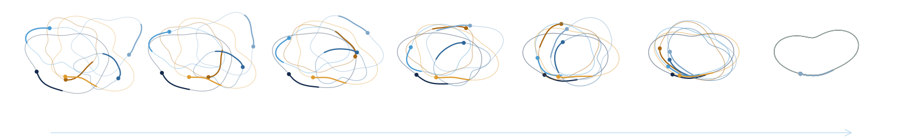

Natural and Engineered Intelligence
School of Data and Information Sciences · University of North Carolina at Chapel Hill
The Singh Lab builds computational models of complex biological and artificial systems, and tests whether those models truly explain the systems they imitate.
Our work spans artificial intelligence, data science, reinforcement learning, computational neuroscience, dynamical systems, and scientific simulation.
News: Satpreet (Sat) Singh joins the UNC School of Data and Information Sciences as an assistant professor in November 2026. Read the announcement
Recruiting: we are looking for PhD students for Fall 2027. How to join

News
- Nov 2026 Sat joins the UNC School of Data and Information Sciences as an assistant professor, and the Singh Lab opens.
- Oct 2026 Paper on when curriculum learning helps in RL accepted at NeurIPS 2026, plus extended abstracts at the NeurIPS workshops on Interpretability for Discovery and Developmental Perspectives on AI.
- Sep 2026 Guest lecture on deep RL and "virtual model organisms" in Harvard's Math 242: Evolutionary Dynamics.
- Aug 2026 Two posters at CCN 2026: larval zebrafish hunting (Proceedings of CCN 2026) and zebrafish collective behavior.
- May 2026 Talk on electric-fish communication and unsupervised machine translation at the Harvard/MIT Workshop on Invented, Constructed, and Emergent Languages in Multi-Agent AI Systems.
- May 2026 Talk at the Kempner Spring into Science Symposium: "Reverse-engineering natural intelligence in weakly electric fish: a virtual laboratory approach."
- Apr 2026 Talk at the Janelia conference on Simulated Bodies: Whole Body Biomechanical Models.
- Mar 2026 InputDSA oral talk at CoSyNe 2026, and the second Agent-Based Models in Neuroscience workshop.
Earlier news
- Jan 2026 InputDSA accepted at ICLR 2026.
- Dec 2025 Electric fish MARL agents accepted as a CoSyNe 2026 poster, and a Harvard Center for Brain Science Neurolunch talk.
- Nov 2025 Workshop on agent-based models in neuroscience accepted at CoSyNe 2026, co-organized with Aran Nayebi (CMU) and Elliott Abe (UW).
- Oct 2025 Three abstracts at the NeurIPS 2025 Workshop on AI for Non-Human Animal Communication: MARL for weakly electric fish, unsupervised machine translation with MARL, and source separation.
- Sep 2025 Solution degeneracy in task-trained RNNs is a NeurIPS 2025 spotlight; zebrafish hunting agents is a NeurIPS 2025 AI4Science workshop spotlight.
- Jun 2025 RLDM 2025 spotlight talk on multi-agent RL for weakly electric fish collectives.
- May 2025 "Pizza talk" at Harvard Medical School on multi-agent electrosensing collectives.
- Apr 2025 Organized the first Agent-Based Models in Neuroscience workshop at CoSyNe 2025, and spoke on plume-tracking agents at the CoSyNe workshop on Collectively Emerged Timescales.
- Mar 2025 Awarded the Alice and Joseph Brooks Fund Postdoctoral Fellowship (2025–26) at Harvard Medical School.
- May 2024 Speaker at the WUSTL NEXTEN conference: Envisaging Theoretical and Computational Neuroscience for the Next 10 Years.
- Apr 2024 Talk on deep RL agents for insect plume tracking at the Harvard Medical School RL Seminar.
Blog posts and older news are on Satpreet (Sat) Singh's homepage →